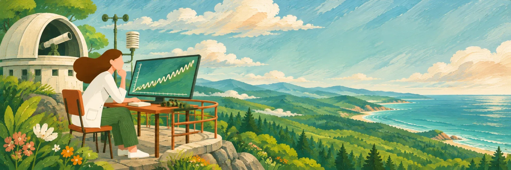

Кривая Килинга —
как увидели,что воздух меняется
У науки о климате есть свой главный портрет — одна линия, которую называют кривой Килинга: неуклонно поднимающаяся вверх кривая с мелкими ежегодными зубчиками, показывающая рост CO₂ в атмосфере. До неё никто не знал наверняка, растёт ли углекислый газ в воздухе вообще. Доказательство добыл один упрямый человек, который почти семь десятилетий назад начал день за днём измерять воздух на вершине гавайского вулкана — вдали от всех труб и лесов, чтобы поймать «фоновый» воздух всей планеты. За жизнь одного поколения кривая поднялась с ~315 до более чем 420 млн⁻¹ и не остановилась.
Одна кривая, изменившая взгляд на воздух
У науки о климате есть свой главный портрет — одна линия на графике, которую называют кривой Килинга. Она показывает, как год за годом растёт содержание углекислого газа в атмосфере, и выглядит обманчиво просто: неуклонно поднимающаяся вверх кривая с мелкими ежегодными зубчиками. Но за этой простотой стоит превращение догадки в измеренный факт.
До неё никто не знал наверняка, растёт ли вообще углекислый газ в воздухе. Предполагали, спорили, считали на бумаге, — но доказательства не было. Его добыл один упрямый человек, который почти семь десятилетий назад начал терпеливо, день за днём, измерять состав воздуха на вершине гавайского вулкана, — и получил линию, которая с тех пор не переставала расти ни на год.
Ниже — как и зачем это измерили, что именно показывает кривая и почему у неё есть ежегодное «дыхание», что означают эти цифры и почему одна линия стала едва ли не важнейшим доказательством того, что человек меняет климат планеты.
Как это измерили
В 1958 году американский учёный Чарльз Дэвид Килинг начал то, что казалось почти бессмысленно монотонным занятием: раз за разом точно измерять концентрацию углекислого газа в атмосфере. Главная хитрость была в месте. Килинг выбрал обсерваторию на склоне Мауна-Лоа — вулкана посреди Тихого океана, за тысячи километров от городов, заводов и лесов. Только вдали от любых местных источников и поглотителей можно было поймать «фоновый» воздух всей планеты, усреднённый и не искажённый соседней трубой или полем.
Трудность была и в самом измерении. Речь шла о доле газа в сотые доли процента, которую нужно было улавливать с высокой точностью и, главное, одинаково из года в год, десятилетиями, чтобы крошечные изменения не тонули в погрешности приборов. Килинг построил и отладил аппаратуру такой стабильности, что его ряды данных стали эталоном; эту одержимость точностью позже назовут одной из причин, по которым кривая вообще получилась достоверной.
Работа не раз висела на волоске из-за нехватки финансирования — измерять «просто воздух» десятилетиями казалось чиновникам сомнительной тратой. Но Килинг не бросал, и измерения на Мауна-Лоа не прерывались. Сегодня это один из самых длинных и ценных непрерывных рядов наблюдений в истории науки — и всё благодаря упрямству одного человека.
Что показывает кривая
Вот она — концентрация CO₂ в атмосфере по годам, от начала измерений до наших дней. Единица измерения — миллионные доли (ppm, млн⁻¹): сколько молекул углекислого газа приходится на миллион молекул воздуха.
На кривой видны сразу две вещи. Первая — неуклонный подъём: за время наблюдений концентрация выросла примерно с 315 до более чем 420 миллионных долей, и подъём этот не просто идёт, а ускоряется — кривая загибается вверх всё круче. Вторая — мелкие ежегодные зубцы. Это буквально дыхание планеты: каждое северное лето леса и поля распускают листву и забирают CO₂ из воздуха, и концентрация чуть падает; каждую зиму растения замирают, и она снова поднимается. Северное полушарие, где суши и растений больше, задаёт этот общий ритм. Планета дышит раз в год, и это видно на графике.
Что значат эти цифры
Чтобы понять масштаб, нужна точка отсчёта. Тысячи лет, всю эпоху земледелия и цивилизации, концентрация CO₂ держалась около 280 миллионных долей — ровно, с небольшими колебаниями. По пузырькам воздуха, замурованным в древнем льду, учёные восстановили эту линию на сотни тысяч лет назад: она гуляла в узких пределах, но за них не выходила. А за последние полтора века она перевалила за 420 — то есть выросла в полтора раза — и поднялась выше, чем когда-либо за миллионы лет истории планеты.
И нет сомнений, откуда этот прирост. Рост кривой точно совпадает по времени и величине со сжиганием угля, нефти и газа — с тем, откуда берутся выбросы. Больше того, у углерода из ископаемого топлива особый изотопный «отпечаток»: он отличается составом изотопов от углерода вулканов или океана. И воздух меняется именно в сторону этого отпечатка — доля «ископаемых» изотопов в атмосферном CO₂ растёт. Это как улика на месте преступления: газ в воздухе прибавляется не откуда угодно, а именно из того, что мы выкапываем и жжём.
Так абстрактное «мы выбрасываем углерод» превращается в конкретное, измеренное число, которое можно посмотреть за любой день. CO₂ в воздухе — больше не предмет веры или спора, а показание прибора, растущее на глазах одного поколения.
Почему это важно
Кривая Килинга важна не только тем, что она показывает, но и тем, что она сделала с самим спором о климате. До неё связь человека и состава атмосферы была гипотезой — красивой, обоснованной, но недоказанной. После неё она стала измеренным фактом. Одна длинная, честная линия превратила «возможно, мы влияем на воздух» в «вот ровно насколько и вот с какого года». Трудно спорить с графиком, который можно продолжать каждый день.
В этом её особая сила — простота. Климатическая наука сложна, полна моделей и неопределённостей, и в этой сложности легко утонуть или усомниться. А кривая Килинга проста до предела: вот прибор, вот воздух, вот число, вот как оно росло семьдесят лет. Не нужно верить моделям будущего, чтобы увидеть, что уже произошло. Поэтому её часто называют самым важным набором данных во всей науке о климате — не самым сложным, а самым убедительным.
И самое трезвое: кривая не остановилась и даже не замедлилась — она продолжает расти, причём всё быстрее. Каждый год к ней добавляется новая точка, и каждый год она выше предыдущей. Линия, с которой начался серьёзный разговор о климате (и из которой выросло, среди прочего, знаменитое «полтора градуса»), всё ещё ползёт вверх прямо сейчас, пока вы это читаете.
Итог: линия, которую видно всем
Кривая Килинга — редкий случай, когда огромная, спорная, пугающая тема сворачивается в одну ясную линию, понятную без всякой подготовки. Один человек, один вулкан, одно упрямое измерение длиной в жизнь — и вот перед нами воздух планеты, нарисованный во времени. Он менялся тысячи лет в узких пределах и резко пошёл вверх ровно тогда, когда мы начали жечь ископаемое топливо.
Есть в этой линии и что-то большее, чем данные. Воздух — самое общее, что есть у всех живущих: один на всех, не поделённый границами, незаметный, пока не задумаешься. Кривая Килинга показывает, что это общее мы все вместе и незаметно меняем — и что изменение можно увидеть, измерить и, значит, остановить. Иногда, чтобы понять свой мир, достаточно посмотреть на одну честно проведённую линию.
Читайте такжеДерево из воздуха — кто вызывает ежегодное «дыхание» кривой: леса Северного полушария, которые летом вытягивают CO₂ из воздуха.